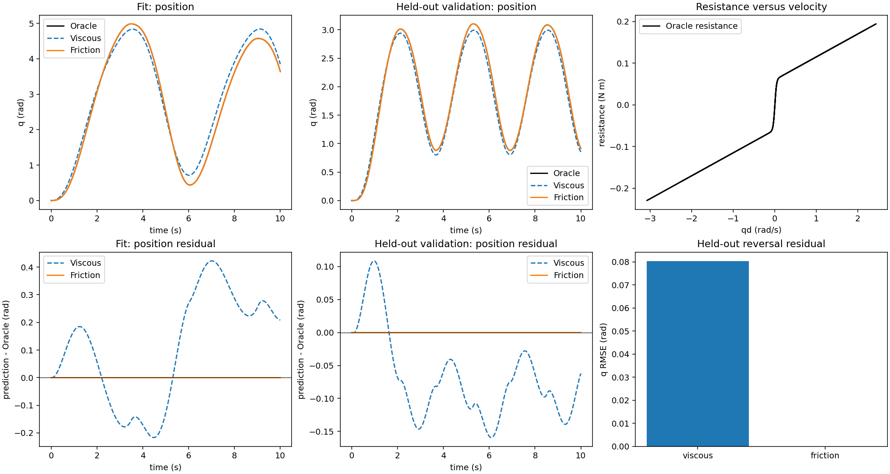

L1 · 执行器延迟与摩擦
上一课从已知力矩出发，估计了关节的惯量和阻尼。这一课换成位置控制：我们给出目标角度，由控制器计算力矩，驱动一个带负载的摆臂。
假如力矩指令晚了一小段时间才执行，运动会怎样改变？我们能否从记录的位置中估计这段延迟，并用它预测另一种运动？
先认识这台小机器
装置由固定基座、一个旋转轴、刚性摆臂和末端负载组成。摆臂长度、质量、负载质量和重力都已知。角度 $q$ 从竖直向下的位置开始计算。
位置控制器比较目标角度与当前角度，计算需要施加的力矩。本实验还在力矩指令到实际施加之间加入延迟。初始模型假定指令立即执行；我们要从数据中检查并修正这个假设。
延迟发生在哪一步
沿着下面这条路径读一遍：目标位置进入固定的 PD 控制器，得到力矩指令；指令经过延迟后才作用于摆臂，随后产生新的运动。
目标位置
→ PD 控制器
→ 力矩指令延迟
→ 带负载的摆臂
→ 位置与速度
延迟作用于控制器算出的完整力矩指令。它与“位置测量来得晚了”是不同的问题，因此要先看清它在路径中的位置。
阅读视频说明
固定基座、刚性臂与末端负载。图纸无法显示指令路径中的延迟。
q_des 进入固定 PD 控制器。缓存保存完整的力矩指令 c。
延迟位于 PD 之后；延迟力矩驱动重力负载摆。
这是所选边界中的等效指令延迟，不是电机电磁时间常数。
展开模型方程
PD 控制器根据位置误差和当前速度计算力矩指令：
$$ c_k=k_p(q^{des}_k-q_k)-k_d\dot q_k,\qquad \tau_k=\operatorname{delay}(c)_k $$
$k_p$、$k_d$ 是固定增益。延迟缓冲区存储已经算好的力矩指令 $c$；根据延迟时间选择、插值历史指令。第一次记录之前的指令历史设为零。
力矩驱动已知的负载摆：
$$ I\ddot q=\tau-g\ell\left(\frac{m_a}{2}+m_p\right)\sin q,\qquad I=\frac{m_a\ell^2}{3}+m_p\ell^2 $$
$m_a$ 是均匀摆臂质量，$m_p$ 是末端点负载质量，$\ell$ 是臂长。摆臂质量分布在整条臂上，负载集中在末端，因此它们对惯量和重力矩的贡献不同。
拟合程序得到时间、目标位置、记录的位置和由位置差分计算的速度。力矩内部记录和真实延迟仅用于解释与核对结果。我们固定机械参数、控制器增益和积分设置，只估计延迟。
为什么较快的运动更容易显出延迟
拟合输入是一段频率逐渐升高的位置指令，也就是扫频。同样的延迟，在慢速运动中只占一个周期的一小部分；周期变短后，它占的比例就更大。
短片中延迟始终为 0.080 s。观察频率升高时，相位差为什么会变得更明显。
阅读视频说明
扫频过程中，频率上升而时间延迟保持为 0.080 s。
相同的时间延迟占每个周期的比例变大，形成更明显的相位差。
局部相位线索约为 360 × 频率 × 延迟；闭环响应还取决于系统和控制器。
对于频率为 $f$ 的正弦信号，纯时间延迟 $\Delta t$ 对应的相位滞后大小为 $360f\Delta t$ 度。这里的摆臂运行在反馈控制中，角度响应还受机械系统和控制器影响，所以这个关系用于建立直觉，不能直接把位置相位差当作延迟的测量值。
从观测中估计延迟
拟合时，程序尝试不同的延迟，让模型产生位置和速度预测，再与扫频实验的观测比较。延迟的取值限制在事先选定的范围内。
这次运行从零延迟的初始模型出发进行对比，最终得到下面的结果。模型其他参数始终不变；真实值只在拟合完成后用于核对。
| 角色 | 等效延迟 | 机械参数 |
|---|---|---|
| Oracle（仅评估可见） | 0.08000 s | 固定的已知臂和负载 |
| 初始模型 | 0.00000 s | 相同已知值 |
| 辨识后 Student | 0.08000 s | 相同已知值 |
估计结果接近 0.080 s，说明这个模型能够解释扫频中的时序偏差。接下来固定该结果，检查它能否预测新的运动。
换一段运动检验预测
验证输入使用预先准备的另一种换向波形，频率和相位组合与扫频不同。两次运行都从零角度、零内部速度开始；验证数据不参与选择延迟。
阅读视频说明
在扫频上拟合延迟；这段换向运动没有用于拟合。
比较初始模型与辨识后模型的位置 RMSE。蓝色与真实系统轨迹接近重合。
留出预测改善支持当前模型；结论仍限于已知机械、固定 PD 和理想观测。
下面是同一次运行的位置 q 和速度 qd 的均方根误差（RMSE）。这个指标把误差平方后求平均，再开平方，因此较大的偏差会更明显地影响结果。
| 数据 | 初始 q RMSE（rad） | 辨识后 q RMSE | 初始 qd RMSE（rad/s） | 辨识后 qd RMSE |
|---|---|---|---|---|
| 拟合扫频 | 0.00442141 | 9.4514e-18 | 0.0177397 | 1.85405e-16 |
| 留出换向 | 0.0308547 | 6.00653e-17 | 0.490069 | 1.10139e-15 |
辨识后的误差在验证运动上也明显降低，说明估计出的延迟改善了这组新指令下的预测。接近数值精度的误差来自本例中匹配的方程、已知机械参数和理想观测。
从残差里寻找线索

图中黑色是真实系统，橙色是初始模型，蓝色虚线和空心标记是辨识后模型。Fit 表示拟合，Validation 表示验证。残差是“模型预测减去观测”；点击图片可以查看大图。
先观察换向附近的橙色残差。响应来得过早或过晚，会产生有规律的正负偏差。对于很小的时间错位，位置误差往往与速度有关，所以残差与速度的关系也能提供线索。
但“与速度相关”不能单独证明问题来自摩擦：延迟也能产生类似现象。我们需要结合系统边界，再设计能够区分不同原因的实验。图中的力矩记录用于辅助解释，拟合程序并没有读取这些隐藏信号。
扩展：摩擦与黏性阻尼
上面的延迟实验引出第二个问题：残差与速度相关时，原因是时序还是阻力？在把多种效应放进更丰富的模型之前，我们先在已知力矩的旋转负载上单独检查这个问题。
摩擦扩展使用：
$$ J\ddot q + b\dot q + \tau_c\tanh(\dot q/v_{eps}) = u $$
J 与 v_eps 已知且固定。Oracle 包含黏性阻尼 b 和平滑的类库仑项 tau_c；本实验不加入延迟、重力、饱和、传感器噪声或回差。估计器只能接收 t、实际力矩 u、q 和 qd。
我们比较两个 Student：
- Viscous-only：拟合
b，固定tau_c = 0； - Friction：同时拟合
b与tau_c。
拟合运动是双向的，覆盖低速和中速；另一组不同幅值、频率和谐波组合的运动留作验证。冻结运行中，纯黏性模型得到 b=0.097292；摩擦 Student 恢复 b=0.055000 和 tau_c=0.060000。留出 q 和 qd RMSE 比（摩擦 / 纯黏性）约为 1.18e-18 和 2.67e-17，换向窗口残差比为 1.22e-19。

这说明为什么要分开组织实验：L1 先在闭环指令路径中隔离时序，再在这个扩展中隔离阻力假设。仅凭残差与速度相关，不能证明原因一定是摩擦；延迟、滤波或错误的力矩边界也可能产生类似图案。
本扩展使用平滑的 tanh 摩擦，不覆盖静止黏着、Stribeck、方向不对称、回差、传感器噪声或硬件迁移。可以查看摩擦实验报告和 Notebook 复现本地运行。
想一想
- 为什么图纸上的臂长和质量都正确，预测仍可能不准？
- 同样的 0.080 s 延迟，在较高频率下为什么更容易产生明显的相位差？
- 如果只看到残差与速度相关，你还需要什么证据才能把原因归为摩擦？
查看参考思路
图纸没有描述整条指令路径的时序。即使机械参数正确，指令晚执行也会改变闭环响应。
频率越高，周期越短，同样的延迟占一个周期的比例越大。不过位置的闭环响应仍取决于控制器和机械系统。
需要能够区分时间错位与阻力效应的实验。例如在已知控制和机械条件下改变输入频率，检查时序解释是否成立，再用覆盖不同方向和速度的运动检验摩擦假设。单张相关性图还不足以确定原因。
如果延迟和摩擦仍然难以区分，先固定边界，加入双向速度对比，再扩大 Student。当提出的运行只改变一个已声明条件、并保留冻结的评估划分时再继续。
这次估计的延迟表示什么
它表示本实验中，从 PD 力矩指令到摆臂输入这一段路径的等效延迟。改变延迟所在的位置或采样方式，参数的含义也可能改变；它不能直接当作电机的电磁时间常数。
实验仍省略了其他摩擦、饱和、柔性、测量噪声和接触。结果支持这个已知机械系统中的时序估计与新运动预测。实际执行器还需要通过测量来检查这些假设。
L1 现在包含两个相互隔离的执行器实验：闭环负载摆臂中的指令延迟，以及已知力矩下的摩擦与黏性阻尼。后续还会研究输出限幅和观测误差，再进入多关节系统。
可选：自己运行实验
在仓库根目录运行以下命令，生成报告并打开本地 CPU 实验：
python -m pip install -r requirements-interactive.txt
python -m synthetic.l1_servo_loaded_pendulum --output-dir reports/l1_servo_loaded_pendulum
python -m marimo run apps/l1_servo_loaded_pendulum.py --host 0.0.0.0 --port 2719
修改 Initial delay（初始延迟） 后，先写下对运动变化的预测。应用会标记设置有待运行，已有曲线仍表示上次结果。点击 Run identification（运行辨识） 后，再比较新的初始模型、辨识后模型和验证误差。